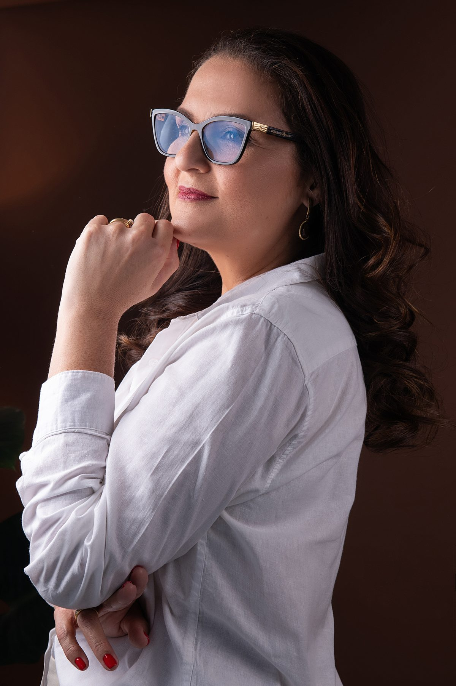

Assessoria de imprensa · Comunicação empresarial · Desde 2019
Damos valor ao que merece ser dito.
Uma consultoria de comunicação para empresas que precisam ser compreendidas antes de serem escolhidas. Reputação, autoridade e presença na imprensa com atendimento sênior e 100% personalizado.
Conheça o que fazemos
Não é você falando de você.
É o mercado falando
de você.
Quando uma empresa conquista um espaço na imprensa, ela não ganha apenas visibilidade. Ganha credibilidade, fortalece sua reputação e passa a ocupar um lugar de referência no mercado.
Esse movimento também amplia a oportunidade de seus executivos, que passam a ser percebidos como referência e procurados como fontes qualificadas para entrevistas e análises.
Comunicação empresarial
para quem precisa
ser levado a sério.
Na Ties, comunicação é decisão de negócio. Trabalhamos imprensa, conteúdo e presença executiva a partir de um diagnóstico, nunca de um pacote pronto.
Cada frente pode ser contratada isoladamente ou combinada em um plano contínuo, conforme o momento da empresa.




Uma consultoria de comunicação.
Uma jornalista sênior por trás.
A Ties Comunicação nasceu em 2019, depois de duas décadas de atuação em grandes empresas e agências, com o propósito de transformar histórias reais em reputação, autoridade e influência.
Quem atende é quem escreve: Fernanda Thiesen Furtado conduz o trabalho com 25 anos de experiência, graduada em Jornalismo e Letras e pós-graduada em Marketing, Comunicação Empresarial e Relações Públicas, com uma rede de apoio acionada sob demanda quando o projeto exige escala.
25
anos de
experiência
2019
fundação
da Ties
02
graduações:
jornalismo e letras
03
pós: mkt, com.
empresarial e rp
Por trás de cada entrega tem
quem escreve e quem atende
Uma operação enxuta e sênior, sem camadas de intermediação, e sem atender em escala.
Conheça o que nos diferencia-
01
Atendimento 100% personalizado, do primeiro contato à entrega do relatório.
-
02
Experiência real com comunicação executiva e imprensa, dos dois lados do balcão.
-
03
Conteúdo com linguagem refinada, estratégica e humana, nunca texto de catálogo.
-
04
Visão integrada de LinkedIn, autoridade, reputação e imprensa.
-
05
Nada de fórmulas prontas, cada cliente tem um contexto, um setor e um porta-voz.
Blog da Ties
Uma leitura mais atenta
sobre comunicação.
Imprensa, reputação e presença executiva. Um espaço para olhar além da publicação e entender o que constrói uma comunicação relevante.
Os primeiros artigos estão em preparação.
Que assunto faz parte do seu momento?Do diagnóstico ao relatório, quatro etapas
O trabalho da Ties é conduzido em um ciclo fechado e previsível: entender o negócio, produzir e relacionar-se com a imprensa, acompanhar o porta-voz e prestar contas do que foi conquistado, com valoração de cada publicação.
01
Diagnóstico
Entendimento do negócio e do setor, definição de porta-vozes, temas e objetivos do período.
02
Produção e imprensa
Pautas, releases e artigos, com relacionamento direto com jornalistas e veículos do setor.
03
Acompanhamento
Preparo e apoio ao porta-voz antes, durante e depois de cada entrevista, com ajuste de rota.
04
Relatório e valoração
Todas as publicações conquistadas, com o valor de mercado de cada espaço obtido.
As dúvidas que aparecem
antes da primeira reunião.
Para quem é e para quem não é esse serviço?
É para pequenas e médias empresas, executivos e C-levels que já têm algo consistente a dizer (um negócio em operação, uma tese de mercado, um porta-voz disponível). Não é para quem busca resultado de venda imediato nem para quem quer apenas volume de publicações: espaço em imprensa não se compra, se conquista.
Como funciona na prática?
O trabalho começa por um diagnóstico do negócio e dos temas em que a empresa tem autoridade. Depois vêm a produção de pautas, releases e artigos e o relacionamento direto com jornalistas. Ao longo do período, o porta-voz é preparado e acompanhado em cada entrevista. Ao fim, um relatório consolida tudo o que foi publicado.
Como sei que o investimento valeu a pena?
Ao fim de cada período contratado, a empresa recebe um relatório com todas as publicações conquistadas e a valoração de cada uma, ou seja, quanto custaria comprar aquele mesmo espaço de mídia como anúncio pago. Essa referência é analisada junto à relevância dos veículos, aos temas publicados e aos objetivos definidos para o trabalho.
Como saber se o serviço é para a minha empresa?
A conversa inicial existe justamente para isso. Em uma reunião é possível avaliar se há matéria-prima para pauta, quem seria o porta-voz e por qual frente começar. Se não fizer sentido agora, isso será dito na própria reunião.
Vamos conversar?
Uma primeira conversa costuma bastar para saber se há trabalho a fazer. Sem proposta automática e sem compromisso.
Falar no WhatsApp